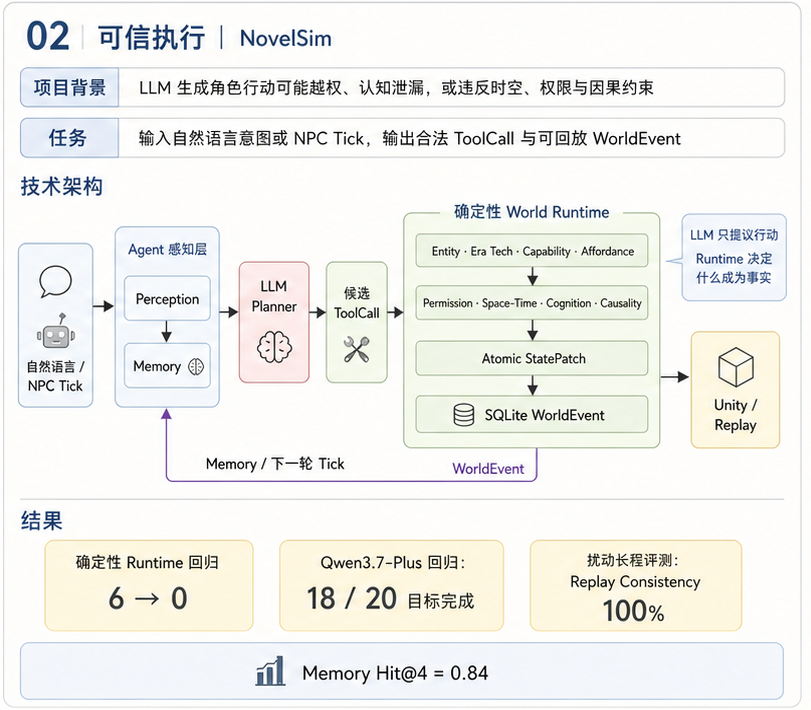

背景：让角色行动真正改变一个可验证的世界
NovelSim 面向小说世界中的多角色叙事模拟：从某一章结束时的世界快照出发，让角色根据各自掌握的信息采取行动，持续推进后续剧情。与直接续写文本不同，人物位置、物品归属和角色认知都由结构化状态维护，模型说“拿到了物品”并不代表拿取成功。
我主要围绕角色私有观察、多角色动作链、规则执行与局部重规划构建后端运行机制，并用隐藏原著事件锚点检验长轨迹结果。项目不涉及模型后训练，核心是将 LLM 决策接入可检查、可恢复的执行系统。
87.07%
无扰动轨迹 · 加权事件召回
3 次
扰动轨迹 · 真实重规划
0
两条轨迹 · 非法状态提交
6/6
完整门禁 · 违规探针拦截
现有挑战：文本合理，不等于行动成立
| 挑战 | 具体问题 | 处理方法 |
|---|---|---|
| 世界状态失真 | 凭空出现物品、越过能力前置条件、叙事与实际持有者冲突。 | 权威快照、受限工具、补丁因果校验。 |
| 角色成为全知者 | 世界存在的秘密，被没有证据的角色直接使用。 | 事实与信念分离、私有观察、来源事件追踪。 |
| 计划执行后失效 | 目标离开、物品易主，或者角色互相等待。 | 依赖变化检测、等待图、受影响动作链重规划。 |
| 长轨迹难评估 | 语言相似不代表事件、对象与顺序正确。 | 隐藏锚点匹配、事件回放与独立叙事评审。 |
我的方法：四个模块组成一条执行闭环
世界状态与角色观察多角色计划规则执行与纠错原著对齐与评测
前两个模块决定“角色知道什么、准备做什么”，第三个模块决定“哪些变化可以成立”，第四个模块检查“整段推演是否可信”。执行结果更新世界，成为下一轮观察的输入。

模块一：世界建模与角色认知
1. 建立权威世界快照
用明确的状态字段表示世界，不让叙事文本成为事实数据库。
具体实现：建立权威世界快照
- 使用 Pydantic 描述角色、地点、物品、关系、目标、事实和信念。位置取角色的 location_id，物品归属取 owner_id；小说特有属性放在扩展字段中。
- 从第 1 章结束的检查点初始化世界，只保留当时成立的状态。特殊能力由世界包声明使用者、目标、前置标记和确定效果，LLM 只能选择调用，不能自行改写能力效果。
- 状态修改使用受限 Operation 协议，拒绝额外字段和未知操作；每次提交递增世界版本，形成可以重放的事件序列。
2. 生成角色私有观察
世界知道的事实与角色相信的事实分开保存。
具体实现：生成角色私有观察
- facts 保存客观事实，beliefs 按角色保存信念、置信度和来源证据。根据角色位置、可见实体、已有信念、目标及可用工具，投影为只读 GameObservation。
- 规划器内部可读取世界以构造投影，但发送给每个角色模型的是该角色观察，而不是完整可变 WorldState。对话与信息传播也经过规则检查，不能直接把全局秘密加入另一个角色的认知。
- 对话输出再检查实体、物品持有关系和角色知识；有效的传播结果记录来源角色、来源事件与证据链，供后续认知审计。
3. 只把已发生事件写入长期记忆
SQLite 保存权威记忆，向量库只作为可重建的检索索引。
具体实现：只把已发生事件写入长期记忆
- 从正式 WorldEvent 投影角色情节记忆；用会话、角色、来源事件、记忆类型组成幂等约束。被拒绝的动作不能被记录为已经发生的事实。
- 按 session_id 与 character_id 同时过滤 FTS5 和 Qdrant 召回，合并去重后按 0.80×语义相关度 + 0.10×词法相关度 + 0.05×重要度 + 0.05×新近性排序；新近性按 exp(-天数/30) 衰减。
- 向量召回的 ID 回查 SQLite 并再次核对角色作用域；向量服务异常则降级到 FTS5，降级路径使用自己的排序权重。
- 反思候选需引用至少 2 条事件证据，经过实体、访问权限、冲突及语义蕴含审查后才写入，每次最多 3 条。检索和反思属于已实现的通用能力，不将独立记忆基准的收益直接归因到原著推演结果。
模块二：多角色规划与显式协作
4. 选择当前需要行动的角色
调度器决定谁出场，模型决定这些角色如何行动。
具体实现：选择当前需要行动的角色
- 根据当前位置、活跃目标、剧情标记和可用能力选出当前推动剧情的 1–3 个角色，避免每轮让全部 NPC 调用模型。
- 逐角色构造私有输入，提供当前目标、允许的工具及相关已提交事件；未来原著锚点不作为规划输入。
- 调度与决策分离：角色选择包含世界包规则，因此当前实验不是没有任何先验的自由小说复现。
5. 生成并检查短动作链
每个角色生成有限步工具调用，再合并为 JointPlan。
具体实现：生成并检查短动作链
- 真实模型为单个角色输出意图、停止条件和最多 3 步动作。默认温度 0.2，生成失败或格式校验失败时最多尝试 2 次，将结构化错误反馈给同一模型修订。
- 依次检查 Pydantic 输出结构、工具参数 Schema 和动作合理性，例如未知工具、移动到当前位置、自我对话、物品持有矛盾及重复无进展对话。
- 通过确定性组装器补充角色与步骤 ID，形成各角色独立动作链。所有动作链为空时显式失败，不用脚本伪造模型成功。
6. 用执行指针表达协作进度
计划是要做的事，Runtime 记录已经执行到哪一步。
具体实现：用执行指针表达协作进度
- 每个角色维护独立步骤指针和完成状态。一个执行 Tick 推进就绪角色的动作，行动逐个通过权威提交路径，不把多角色调度等同于并发修改世界。
- 通用 JointPlan 支持 ActionStep、等待其他角色指定步骤的 WaitAgent，以及等待确定性状态条件的 WaitState。
- 等待条件由位置、物品归属、事实或标记等谓词判断。等待图中出现环时触发死锁处理。
- 实现边界：当前 v8 原著模型输出主要是 ActionStep；显式等待与死锁机制由专门协作计划和 Runtime 测试覆盖，不宣称该次真实推演由模型自动生成了等待步骤。
模块三：规则执行与动态纠错
7. 把工具调用转换成受控候选补丁
模型提出行动，工具提出变化，校验器决定变化是否允许。
具体实现：把工具调用转换成受控候选补丁
- ToolRegistry 检查工具是否存在、角色是否有权限以及参数是否符合 Schema，再检查实体、空间位置、能力与交互条件。
- 工具只产生候选 StatePatch。继续核对 ToolCall 与 Patch 的因果关系，例如移动工具不能夹带物品转移，角色也不能借合法工具修改无关对象。
- 在状态副本上应用操作并检查约束，失败返回结构化错误，不把半完成变化写进权威世界。
8. 提交事件并验证恢复结果
只有成功提交的事件才能改变世界、进入回放或成为叙事依据。
具体实现：提交事件并验证恢复结果
- 提交前检查 expected_version 与当前版本一致；冲突时拒绝提交。成功后创建包含补丁、参与角色、前后版本及因果信息的 WorldEvent，并返回新状态。
- 叙事解释已提交事件；对话的认知后果也以事件方式提交，不能只改文本不改状态。
- 从初始快照逐个重放事件，检查版本连续性，再比较权威事实的稳定哈希。哈希排除 version，版本链单独检查。
- 恢复时对账已提交事件与 Runtime 指针，处理“事件已成功、执行指针尚未持久化”的窗口，避免重复执行。内存事件提交与持久化路径分别承担职责，不把普通函数调用描述成跨组件数据库事务。
9. 只重规划失效的剩余动作链
保留已完成事实，不因一次失败重做整个剧情。
具体实现：只重规划失效的剩余动作链
- 从剩余动作提取依赖的角色、物品、事实和关系，只比较相关状态变化；工具失败、依赖失效和等待死锁统一转换为结构化触发器。
- ReplanRequest 携带原计划版本、完成步骤、受影响角色、剩余意图、失败码及最新状态差异，再为受影响角色构造新观察。
- 模型先修复前置条件，再继续原意图。新动作链重新过校验后替换受影响的剩余部分；保留已提交事件和其他角色计划，记录 parent_plan_id 与 revision。
- 重规划达到次数上限后显式停止或置为失效状态，保留当前世界，不无限重试，也不宣布虚假完成。
一个执行例子：目标已经离开原地点
原计划：与目标对话 → 获取消息
环境变化：目标已移动到另一地点
执行检查：不同地点，拒绝对话；世界状态不变
失败反馈：失败码 + 最新位置 + 尚未完成的对话意图
局部重规划：先移动 → 再对话
再次校验并提交：位置事件 → 对话事件 → 合法认知更新这是机制示例，不作为额外实验样本或成功次数统计。
模块四：原著对齐与长轨迹评测
10. 把推演输入与评测答案分开
从已知检查点出发，结束后才读取未来原著事件锚点。
具体实现：把推演输入与评测答案分开
- 固定第 1 章结束时的世界快照，无玩家干预推进第 2–5 章片段。终点用权威状态条件判断，不由模型自行宣告完成。
- 原著锚点描述事件涉及的工具、行动者、目标、关键词、顺序和权重；运行结束后才将锚点交给对齐器。
- 区分 clean 无扰动与 perturbed 扰动运行，并记录实际模型调用、脚本回退、执行失败、重规划和非法提交。隐藏锚点不等于消除了模型预训练记忆或世界包先验。
11. 分别计算事件召回与顺序
先判断做了哪些事，再判断这些事发生的先后。
具体实现：分别计算事件召回与顺序
- 每个锚点从尚未使用的模拟事件中寻找最佳匹配；工具、行动者、目标必须满足硬条件，避免仅靠相似文本判为命中。
- 加权召回等于命中锚点权重之和除以总权重，9/10 命中不必等于 90%。匹配阶段不强制顺序，之后统计相邻已匹配锚点的事件索引是否递增。
- 角色和目标一致性已由匹配门禁保证，因此不再把已匹配事件上的 100% 当作额外独立效果；重点报告召回、顺序与漏掉的事件。
12. 将程序正确性与叙事质量分开验证
规则测试回答能否安全执行，模型评审回答剧情是否连贯。
具体实现：将程序正确性与叙事质量分开验证
- 确定性测试覆盖规则拒绝、信息传播、状态回放、显式等待和死锁恢复；不需要模型参与的测试与真实模型轨迹分别报告。
- LLM Judge 按每 12 个事件分块，评估因果、人设、目标推进、世界状态一致性和重复控制，再聚合。通过条件为总分至少 0.72、每维至少 0.60，且无阻断问题。
- 聚合输出的高严重度问题必须有分块证据支撑，否则降级，减少评审器凭空制造阻断。
- 另外使用同模型 direct-prompt 强基线做写作质量盲测。规则更可靠不自动意味着文笔更好，也不把不同会话的 Judge 分数与 clean 运行拼成一组数据。
实验结果：按运行与测试范围分别报告
以下来自项目已有报告，本次页面整理未重新调用模型或重跑训练。主线使用真实 LLM 推演《第一狂妃：废柴三小姐》的单一片段。
| 指标 | 无扰动 clean | 扰动 perturbed |
|---|---|---|
| 片段完成 / 脚本回退 | 完成 / 0 | 完成 / 0 |
| 原著事件命中 | 9/10 | 10/10 |
| 加权事件召回 | 87.07% | 100% |
| 相邻锚点顺序一致性 | 100% | 88.89% |
| 重规划次数 | 0 | 3 |
| 非法提交 / 权威回放 | 0 / 一致 | 0 / 一致 |
| 模型调用 / 总 Token | 15 / 70,653 | 25 / 122,606 |
扰动运行的事件召回更高、顺序更低，只说明这条轨迹在恢复过程中出现了不同路径，不能据此推断扰动能提升模型能力。
| 独立验证 | 结果 | 解释边界 |
|---|---|---|
| 确定性门禁消融 | G0–G3 分别拦截 0、2、5、6 个违规探针，共 6 个。 | 验证规则层的作用；不是大样本真实模型违规率实验。 |
| 确定性长程基准 | 6/6 完成，报告死锁恢复率 1.0、无谓重规划率 0。 | 固定扰动套件，隔离模型随机性。 |
| 中文记忆检索 | 25 条记忆 / 50 个查询；FTS5 Hit@4 = 0.84，MRR = 0.805。 | 小规模检索基准，不代表长剧情最终收益。 |
| 独立持久化会话 Judge | 综合 0.888，人设 0.93，目标推进 0.75，阻断问题 0。 | 来自另一次 28 事件会话，不是上表 clean 轨迹。 |
| 同模型写作质量盲测 | 与 direct-prompt 强基线为 3:3。 | 6 题样本，不宣称主观写作质量领先。 |
失败案例、局限与下一步
- 关键小事件仍会漏：无扰动轨迹未命中取外袍事件，说明大方向推进不代表每个低层动作都还原；需要分析动作选择、前置条件与锚点定义各自的影响。
- 目标进度更新偏弱：独立 Judge 中目标推进为 0.75，低于人设与状态一致性；部分目标指针没有及时反映已发生的事件，部分对话语义重复。
- 世界包有人工先验：初始状态、能力效果、调度条件与终点包含领域建模。当前主要验证一个小说片段，尚不能推广为任意长篇小说的自动模拟。
- 安全结论有范围：“非法提交 0”只针对已报告运行；确定性门禁与回放不能证明模型认知或所有规则在开放场景下绝对正确。
- 评测还需扩展：增加多世界包、多随机种子和真实模型门禁消融；将记忆检索、反思、等待机制分别接入受控对照，验证各模块对长轨迹的实际贡献。